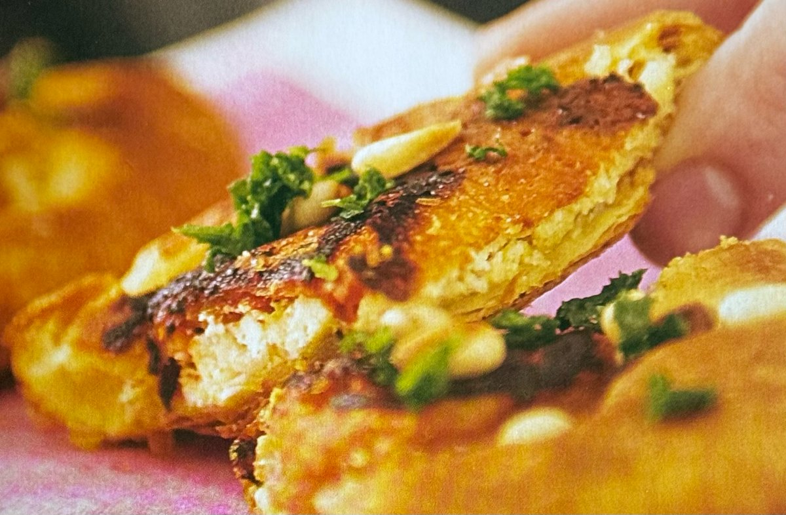

Tatin de tomates
Ingredients
×
- 12 à 14 tomates
- 2 filets d'huile d'olive
- sel
- poivre
- 2 mozzarellas
- 10 feuilles de basilic
- 1 pâte feuilletée
- 2 c. à s. de moutarde

Préparation
Étape 1
Monder 12 à 14 tomates : les plonger 30sec dans l’eau bouillante, les éplucher, les couper en deux et les épépiner.
Étape 2
Les poser sur la plaque du four huilée avec 2 filets d'huile d'olive, saler (sel) et poivrer (poivre). Confire 10 à 15min à 230ºC.
Étape 3
Huiler un moule à manqué. Couper 2 mozzarellas en rondelles et ciseler 10 feuilles de basilic.
Étape 4
Disposer les tomates au fond du moule, côté bombé contre le fond, en laissant un espace au bord. Parsemer de basilic et couvrir de mozzarella.
Étape 5
Badigeonner 1 pâte feuilletée de 2 c. à s. de moutarde et la poser sur la mozzarella, côté moutarde. Rentrer les bords et cuire 35min à 210ºC.
Étape 6
Attendre 30sec puis démouler en retournant sur un plat.